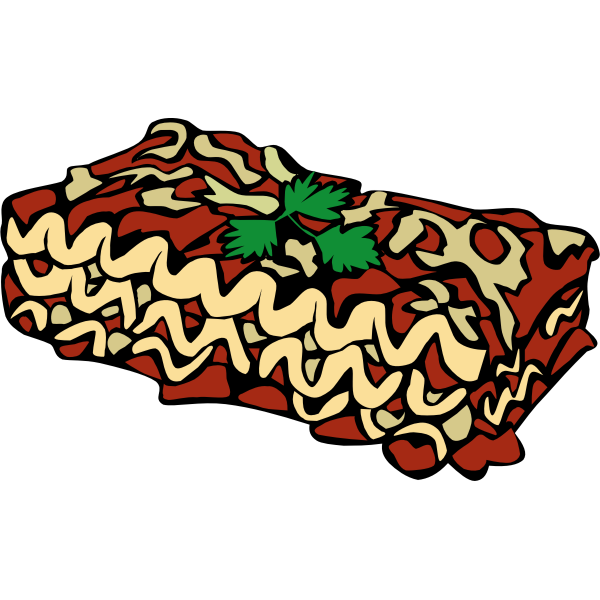

Lasagna

Delicious, quick and healthy lasagna recipe
Ingredients you will need:
- Meat
- Onion and garlic, one half of a cup each
- Tomatoes, 1 can of crushed tomatoes and 2 cans of tomato sauce
- Half a cup of water
- Spices, to each their own. We reccomend no more than half a tablespoon of: fennel seeds, black pepper, salt and basil leaves.
- Sugar, 2 tablespoons
- Lasagna noodles
- 1 egg
- Cheese. 16 ounces of ricotta, and three forths of a pound of sliced mozzarella
Steps
- Make the meat sauce: Cook sausage, ground beef, onion, and garlic in a Dutch oven over medium heat until well browned. Stir in crushed tomatoes, tomato sauce, tomato paste, and water. Season with sugar, 2 tablespoons parsley, basil, 1 teaspoon salt, Italian seasoning, fennel seeds, and pepper. Simmer, covered, for about 1 1/2 hours, stirring occasionally.
- Cook the noodles: Bring a large pot of lightly salted water to a boil. Cook lasagna noodles in boiling water for 8 to 10 minutes. Drain noodles, and rinse with cold water. In a mixing bowl, combine ricotta cheese with egg, remaining 2 tablespoons parsley, and 1/2 teaspoon salt.
- Layer the lasagna: To assemble, spread 1 1/2 cups of meat sauce in the bottom of a 9x13-inch baking dish. Arrange 6 noodles lengthwise over meat sauce. Spread with 1/2 of the ricotta cheese mixture. Top with 1/3 of the mozzarella cheese slices. Spoon 1 1/2 cups meat sauce over mozzarella, and sprinkle with 1/4 cup Parmesan cheese. Repeat layers, and top with remaining mozzarella and Parmesan cheese. Cover with foil: to prevent sticking, either spray foil with cooking spray or make sure the foil does not touch the cheese.
- Cover the lasagna with foil and cook it
- Let the lasagna rest
- Enjoy your lasagna!